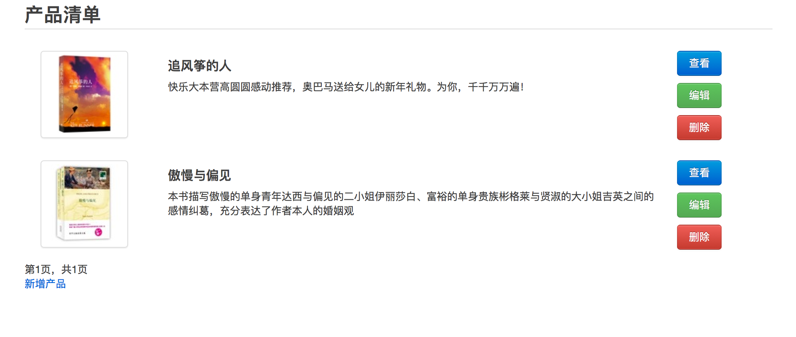

关于界面：改造 ProductList 界面¶
有了上一节关于 Django 模板的基础，改造界面就很容易理解了。将界面设计师设计的页面中的内容根据复用程度分别放到基础模板 base.html 和专用模板 productlist.html 中。
# depot/templates/base.html
<html xmlns="http://www.w3.org/1999/xhtml">
<head>
<meta http-equiv="Content-Type" content="text/html; charset=utf-8">
<meta name="description" content="a depot implement with Django"/>
<meta name="keywords" content="django,depot" />
<meta name="author" content="Holbrook(http://hi.csdn.net/space-2668.html)" />
<title>{% block title %} 标题 {% endblock %}</title>
<link rel="stylesheet" href="/static/css/bootstrap.min.css">
</head>
<body>
<div class="container">
{% block content %}
内容
{% endblock %}
</div>
</body>
</html>
base作为整个网站的基础布局，包含了所有页面都需要的bootstrap.min.css。同时设置了两个内容块（title, content)。在productlist.html中替换这两个内容块：
# depot/templates/depotapp/list_product.html
{% extends "base.html" %}
{% block title %} 产品清单 {% endblock %}
{% block content %}
<div class="container">
<div class="page-header">
<h2>产品清单</h2>
</div>
{% for item in list_items.object_list %}
<div class="row" style="padding-top:10">
<div class="span3 media-grid">
<a href="#">
<img class="thumbnail" src="{{item.image_url}}" alt="">
</a>
</div>
<div class="span-two-thirds">
<h4>{{item.title}}</h4>
{{item.description}}
</div>
<div class="span2" style="align:right">
<p><a class="btn primary" href="{% url depotapp.views.view_product item.id %}">查看</a></a> </p>
<p><a class="btn success" href="{% url depotapp.views.edit_product item.id %}">编辑</a> </p>
<p><a class="btn danger" href="#">删除</a></p>
</div>
</div>
{% endfor %}
{% if list_items.has_previous %}
<a href="?page={{ list_items.previous_page_number }}">上一页</a>
{% endif %}
<span class="current">
第{{ list_items.number }}页，共{{ list_items.paginator.num_pages }}页
</span>
{% if list_items.has_next %}
<a href="?page={{ list_items.next_page_number }}">下一页</a>
{% endif %}
<p><a href="{% url depotapp.views.create_product %}">新增产品</a></p>
{% endblock %}
先是声明这个模板继承自 base.html，然后是两个内容块的实现。
注意其中链接的写法：href=”{% url depotapp.views.view_product item.id %}”。这样定义的 href 是关联到 view 函数，而不是硬编码的 URL。在以后如果改变了 URLconf 的定义，不需要再更改模板。这个功能不是 Rails 特有的！
关于分页的部分，无需关注，以后再说。
最后，认真填写一下表单，将真正的数据存到数据库，就可以在 http://localhost:8000/depotapp/product/list/ 看到漂亮的界面了。
例子中使用的书籍信息和图片链接均来自豆瓣读书。